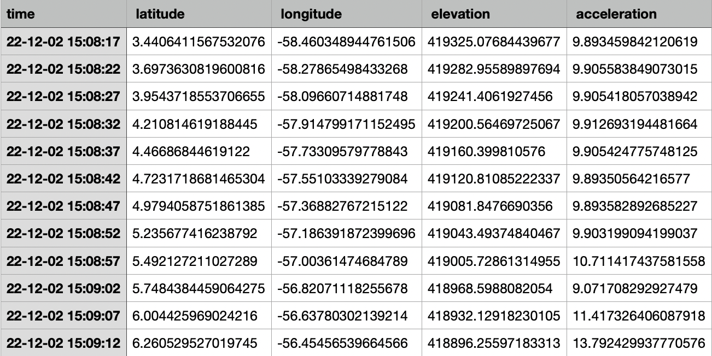
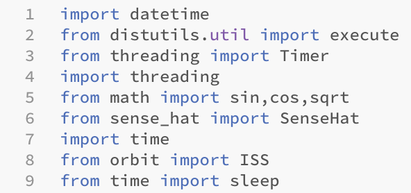
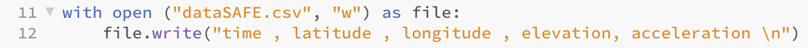
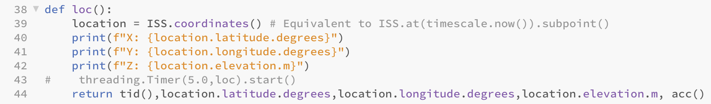
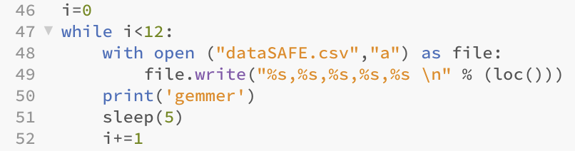

ESA har placeret to RaspberryPi microcomputere om bord på den internationale rumstation ISS. Computerne er udstyret med sensorer og to kameraer, et som peger ind i rumstationen og et som peger mod Jorden. I dette forløb arbejdede vi med pythonprogramering som vi skulle bruge til at kode et lille forsøg op til de RaspberryPi som er på ISS.
I dette projekt ville vi kode et program til AstroPi, som skulle kunne finde lokationen for ISS med formål at se om den bevægede sig i en ellipse, ligesom jordens bane om solen samt hvornår ISS har sin højeste og laveste acceleration. Koordinaterne fandtes ved hjælp biblioteket ”Orbit”, der indeholder lokationen for ISS på det nuværende tidspunkt. Samtidig med at AstroPi printer tiden, printer den de tilhørende koordinater på det givne tidspunkt. Til accelerationen brugte vi sensoren ”Accelerometer” til at finde ISS acceleration. Siden AstroPien ikke var oppe på rumstationen, målte vi accelerationen af vores egen AstroPi på jorden.
ESA har en række forskellige retningslinjer, som faktisk gør det lidt svært at få lavet et ordenligt projekt. Dette er også forståeligt. Vi startede ud med en ide om at måle hvorvidt solen eller månen har en indvirkning på ISS's bane rundt om jorden. Grundet uoverenstemmelse med retningslinjerne, valgte vi derfor istedet at undersøge, hvorvidt ISS's bane er ellipseformet om jorden, som jordens bane om solen. Et af ESA's krav er, at forsøget ikke skal afhænge af en specifik begivenhed, som muligvis ikke vil finde sted i løbet af de 3 timer vi får lov til at køre eksperimentet. Dette lever vores projekt op til, da vi bare skal have så mange mulige koordinater i løbet af de 3 timer, for at bestemme bevægelsen. Der er samtidigt ikke behov for andet udstyr, kommunikation eller indgreb fra astronauter som også er krav sat af ESA.
Her er et udsnit fra vores testmåling:
Vores testmåling viser ISS placering sammensat af længdegradden, breddegraden samt afstanden fra jorden på et givent tidspunkt. Den sidste kolonne med acceleration viser accelerationen af vores AstroPi på jorden. Vi havde en hypotese om, at ISS bevæger sig rundt om jorden i en ellipse. ). Ud fra første række af koordinater fandt vi ISS's lokation til at være omkring sydeuropa, helt specifikt Guyana. Dog kørte vi ikke forsøget i de 3 angivet timer rundt om jorden, så vi kan ikke vide om ISS ville synke yderligere end den sidste række af koordinater. Med disse få data, kan vi snævert konkludere, at ISS virker til at have en ellipseformet bane rundt om jorden, nøjagtigt som jordens bane om solen.
Herunder kan vores program og/eller data fra testmålingen downloades: Kode - AstroPi eller Data
Sidst men ikke mindst, vises herunder vores flowchart over koden:
Herunder ses forskellige kodestumper fra vores kode, der er essentielle for, at opsamle det data, vi har brug for:
Aller først skal der selvfølgelig importeres de biblioteker, som gør det muligt for os, at bruge sensoren og GPS'en der skal indsamle vores data. Eksempelvis gør biblioteket "math" det muligt for os at bruge sinus, cosinus og kvadrering til at behandle vores data. Biblioteket "sense_hat" gør det muligt for os at bruge sensorerne. Dette kan ses på nedenstående billede:
Herefter skal der oprettes et seperat dokument, hvor vores data bliver opsamlet og skrevet ned. Dette kan ses på nedenstående billede. Først oprettes et dokument ved navn "dataSAFE.csv" og med "w" (overwrite) indskrives 5 kolonner med navnene "time, latitude, longitude, elevation, acceleration" og herefter "/n" for linjeskift. Dette illustreres på billedet til venstre "udsnit fra testmåling".
Koden skal jo selvfølgeligt kunne finde ud af at finde lokationen på ISS. Dettes gøres først ved import af biblioteket "orbit" hvorved ISS's lokation kan findes (vist på 1 billede). Herefter defineres en funktion ved navn "loc" og lokationen bliver sat til ISS's nuværende lokation. Herefter findes X-, Y- og Z-komposanterne af lokationen og funktionens resultater (data) returneres til "caller koden". Hele koden vises på nedenstående billede.
Sidst men ikke mindst, så skal programmet kunne indskrive de data som den opsamler undervejs. Billede af koden ses herunder. Først sættes variablen i = 0. Herefter, mens i<12 skal det førhen oprettede dokument åbnes. Ved brug af while i<12 vil Astropien køre koden så længe at i er mindre end 12. Herefter indskrives data (fra funktion loc()) i rækkefølge under hver kolonne og en ny linje tilføjes herefter. Hernæst står "a" (append), som gør, at der kan blive tilføjet noget til dokumentet, nemlig det, som førhen blev returneret. Dernæst venter programmet i 5 sekunder, i bliver 1 større vha. 1+=1 og til sidst kører koden igen. Dette gentages, indtil i>12, hvorefter koden stopper.
